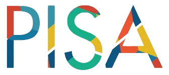

Neuprint Cognitive Forensics Engine v2.0
This result includes a structural verification record.
Use the QR code to access the verification anchor.
Verification ID :
Use the QR code to access the verification anchor.
Verification ID :

Structural Reference for Human Reasoning
Neuprint analyzes how reasoning develops in writing and evaluates whether key decisions remain under human control when AI assistance is present.
Submitted Text
Structural Interpretation
1. Reasoning Structure Layer (RSL)
This section shows how your thinking was organized in this writing, and what you can improve next.
RSL Level (1~6)
Reasoning Index
Cohort Placement
Structural Reliability Index
Reasoning Summary
Cohort Positioning
The horizontal axis shows the Reasoning Index. The vertical axis shows overall reasoning depth relative to the cohort.
RSL Radar
This chart shows how different reasoning abilities work together. A more balanced shape indicates consistent thinking structure, while sharp dips suggest areas that may need improvement.
Reasoning by Dimension
| Reasoning Dimension | Score | Structural Observation |
|---|
RSL (R1–R8) is aligned with internationally validated reasoning constructs used
across OECD/PISA assessments, ETS evidence-centered evaluation frameworks,
APA-endorsed critical thinking models, and UNESCO-referenced global competence and
citizenship frameworks.
2. Cognitive Fingerprint Framework (CFF)
Describes structural characteristics of reasoning formation and revision behavior
observed in the task, based on the CFF indicator set.
Observed Reasoning Patterns
Primary pattern is and secondary
pattern is .
Final Determination
Based on the observed reasoning patterns and structural control signals, the reasoning is classified as :
Type Confidence :
Cognitive Fingerprint
Reasoning Structure Visualization
The Cognitive Fingerprint is a structural identification layer for reasoning. While topics may change, the way a person constructs claims, moves between ideas, and revises conclusions follows a consistent pattern. NeuPrint visualizes this repeatable structure to enable comparison across prompts, domains, and time.
CFF Radar
The CFF Radar shows the relative distribution of structural reasoning indicators.
The shape reflects contribution patterns rather than performance or optimality.
CFF Indicator Summary
| Code | Score | Indicator | Status |
|---|
The Cognitive Fingerprint Framework describes how reasoning is structurally formed,
revised, and controlled, providing a stable reference for understanding thinking
patterns beyond surface content or outcomes.
3. Reasoning Control (Structural Agency)
Evaluates individual control over reasoning decisions versus automated continuation,
as defined by structural agency at decision boundaries in NeuPrint.
Reasoning Control Summary
Control pattern :
Reliability band :
Observed Structural Signals
These signals reflect document-specific structural behavior and are independent of
surface-level writing style.
Reasoning Control Distribution
The distribution shows the proportion of ownership of reasoning decisions across
structural decision points. Values reflect where control was exercised during
reasoning transitions, not authorship attribution, model usage, or stylistic
origin.
Structural Control Signals
(Agency Indicators)
Signal values represent relative contribution to the overall reasoning control
determination, normalized on a 0 to 1 scale.
- Structural variance : non-linear restructuring across reasoning boundaries.
- Human rhythm index : irregular pacing consistent with reflective decision cycles.
- Transition flow : intentional movement between reasoning states.
- Revision depth : degree of conceptual modification at semantic boundaries.
4. Role Fit Signals
Explores alignment between observed reasoning patterns and role-specific cognitive
demands.
Cognitive Style Summary
Job Role Fit
Role Fit Inference Flow
Cognitive Operating Characteristics
thought control · reasoning mode
Reasoning Structure Patterns
decomposition · linkage · validation · regulation
NeuPrint Primary Metrics
CFF 8 · RSL R1–R8
NeuPrint Secondary Interpretations
Reasoning Level · Stability · Drift
Competency Fulfillment Assessment
OECD aligned · O*NET aligned · reference
Job Role Fit
final alignment signal · decision support
OECD

PISA
ETS
APA
O*NET
AERA
NCME
AAC&U
Cambridge
IB
LSAT
GMAT
NeuPrint’s cognitive frameworks and rubrics are structurally aligned with
internationally recognized assessment and competency systems
.
These include OECD PISA , ETS measurement models , AERA and NCME evaluation standards , and AAC&U VALUE rubrics .
They also reflect shared reasoning constructs found in Cambridge International , the International Baccalaureate (IB) , and reasoning assessments such as the LSAT and GMAT .
These include OECD PISA , ETS measurement models , AERA and NCME evaluation standards , and AAC&U VALUE rubrics .
They also reflect shared reasoning constructs found in Cambridge International , the International Baccalaureate (IB) , and reasoning assessments such as the LSAT and GMAT .